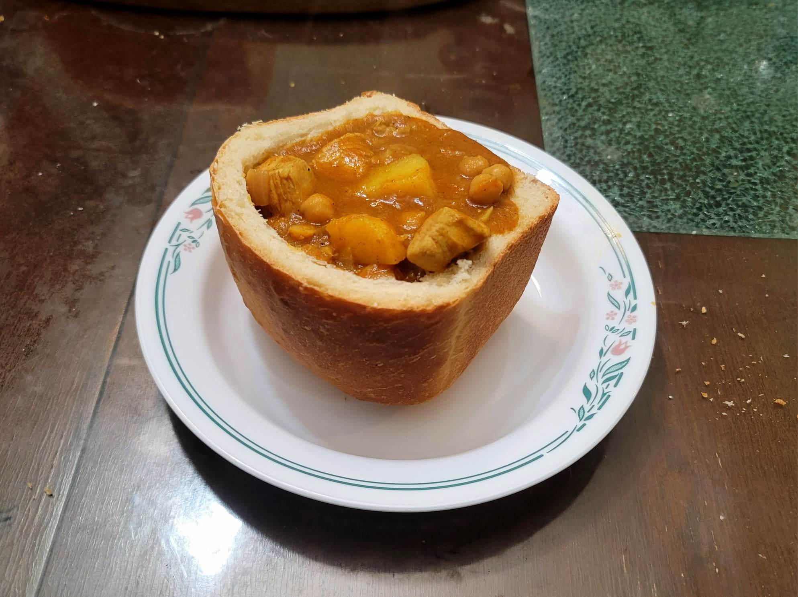

Bunny Chow

Ingredients:
- 1 lb Chicken thighs, boneless, skineless, cubed
- 1/2 cup Canola oil
- 2-3 Curry leaves
- 1 tsp Ginger, minced
- 2 tsp Garlic, minced
- 1 tbsp Curry powder, or more to taste
- 1 Onion, diced
- 2 medium Tomatoes, diced
- 1 stick Cinnamon
- 1/2 tbsp Paprika
- 3 Cardamom, lightly crushed
- 8 oz Potatoes, peeled and cubed
- Optional: 1 15 oz can Chickpeas, rinsed, drained
- Optional: 1/2 tsp Cayenne pepper
- 1 1/2 cup Chicken broth or water
- Salt, to taste
- Black pepper, to taste
- 1-2 loaves White bread, not sliced, cut into 2-3 pieces each and hollowed to use as a bowl
Instructions:
- Heat a pot with the oil over medium heat. Add the onions, garlic, ginger, cinnamon, curry leaves, cardamom, and curry powder. Stir often and cook until the onions become translucent, about 3-7 minutes.
- Add in the tomatoes and stir to combine. Then add in the chicken. Sauté for about 4-7 minutes. Add a little broth/water to prervent burns if necessary.
- Then add in the chickpeas, potatoes, and broth. Bring to a boil and then reduce to a simmer uncovered. Let cook for 25 minutes or until thickened to preference. After the 25 minutes, to help thicken the curry, take some of the potatoes and chickpeas and mash them with a little bit of the liquid. Then stir them back in. Repeat to preference.
- Taste and add salt and pepper as needed. Serve hot in the white bread as a bread bowl.